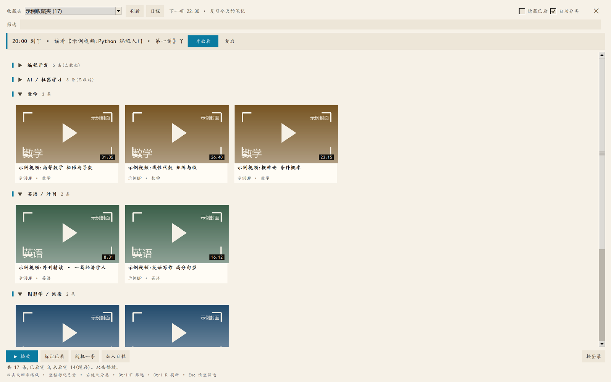
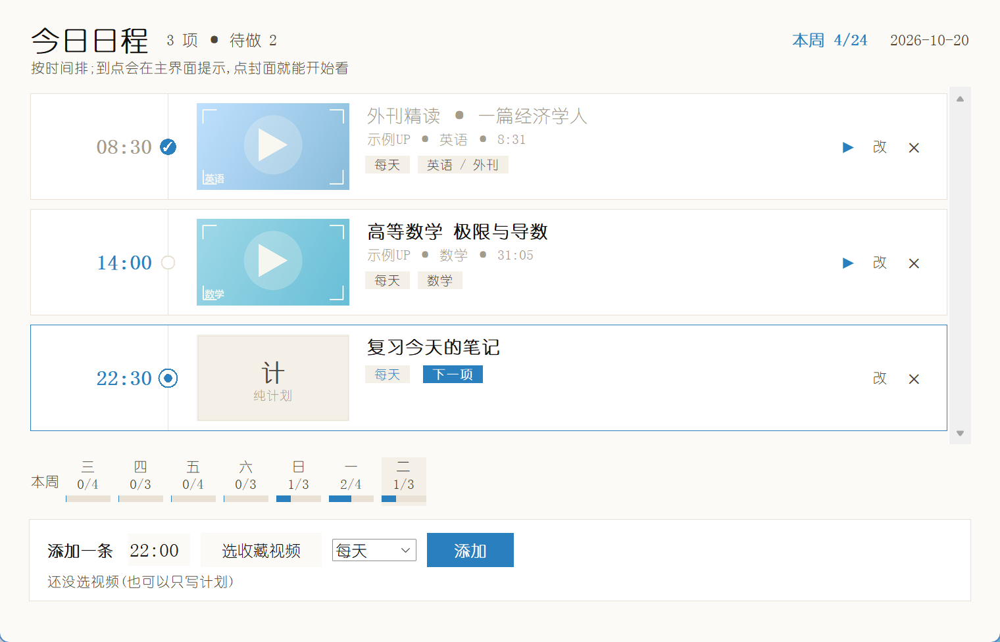
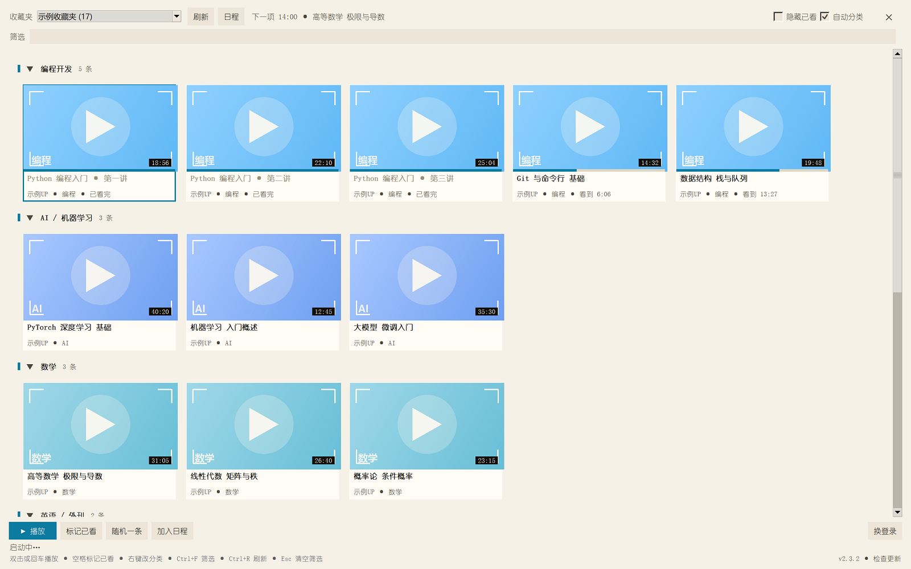
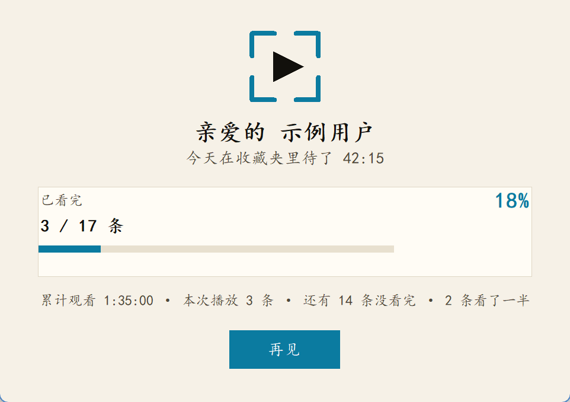

收藏夹在吃灰
收藏是"以后再看",但"以后"永远不会来。没有进度、没有计划,收藏夹就成了纪念碑。
存的时候很认真,再也没打开过。而每次想学习,打开 B 站,先被首页推荐带走半小时。 FavFocus 只做一件事:让你只看自己存下的东西。
收藏是"以后再看",但"以后"永远不会来。没有进度、没有计划,收藏夹就成了纪念碑。
你只想看一个收藏的视频,却被首页的推荐、热榜、自动连播牵着走。想专注,先得把推荐关掉。
一条公开课看了一半,过几天想接着看,得自己拖进度条找位置。收藏多的时候尤其折磨。
不做社区、不做推荐、不写你的收藏。只读取,只播放,只记录进度。
没有首页、没有推荐、没有弹幕列表。封面卡片按分组铺开,想看哪条点哪条。
默认视图双击/回车直接全屏;看到哪儿自动记录,下次从上次的位置继续,不用自己拖进度条。
核心体验按关键词把收藏分成编程开发、数学、AI、英语等分组;分错了右键改一下,记住你的选择。
可手动纠正排"20:00 看这一条",到点在应用内轻提醒;看完自动打勾,本周完成情况一眼看清。
带封面时间轴关窗口时给你一张小结:今天看了多久、收藏夹已经看完几条,轻轻提醒你适可而止。
不打扰手机扫码登录;登录凭证用 Windows DPAPI 加密保存在本机。不采集、不上传任何使用数据。
本地优先每次启动都会检查(10 分钟内不重复);点右下角版本号也能手动查。有新版就铺满窗口提示,能看到更新内容,点一下下载、自动关闭旧版并安装。
全屏提示Python + tkinter 写成,不依赖浏览器插件、不装 Electron。打包成单个 exe,双击即用。
单文件100% 到 200% 缩放下都清晰;窗口铺满屏幕,不弹系统窗口、不打断你。
细节界面字体换成了幼圆,更接近手绘图标的感觉。下面都是示例数据(不是任何人的真实收藏),只为让你看清界面长什么样。




不需要装 Python,也不需要浏览器插件。安装包和绿色版都在 GitHub Releases 上。
%APPDATA%\favfocus下载安装包
点上面的「下载安装包」,得到 FavFocus-Setup-x.y.z.exe。
双击安装
点「安装」即可,不需要管理员权限。
扫码登录
打开应用,点右下角「换登录」,用 B 站 App 扫码。
%APPDATA%\favfocus。卸载默认不删数据,想彻底清理直接删这个文件夹。
本项目是个人开源作品,非 B 站官方客户端,只读取你自己账号下的收藏夹。
换上手写的 favfocus 放大镜图标;项目更名为 FavFocus;更新提示改为全屏、能看到更新内容;配色改为更白的纸白 + 天蓝。
每行带视频封面、时间轴、UP 主与时长;「下一项」高亮,已完成打勾。安装器支持自动关闭旧版本再覆盖安装。
收藏夹卡片网格、全屏播放与进度续播、自动分类、日程提醒、退出小结、扫码登录、DPAPI 加密、安装包。
FavFocus 不只有代码,还有这些共创者的手艺。排名不分先后,名单会持续更新。
FavFocus 的手绘风图标——浅蓝底、灯泡与 bili 相关元素——出自 Lizzy 之手。
想一起参与? 图标、文案、测试、翻译、找 bug 都欢迎—— 到 GitHub Issues 提一个,或者直接发 PR。
需要登录才能读你的收藏夹。推荐用手机扫码:应用会启动一个独立的浏览器窗口,你扫码后它只取走 SESSDATA,并用 Windows 自带的 DPAPI 加密存到本机。它不会保存你的密码,也不会把凭证发到任何第三方服务器。
不会。收藏夹、观看进度、日程都只写本机 %APPDATA%\favfocus。检查更新时只向 GitHub 读取公开的版本号,不发送任何个人信息。
不会。覆盖安装只替换程序文件,登录态、进度、日程全部保留。安装器检测到旧版本还在运行时会先自动关闭它。
目前只做了 Windows(10/11)。源码是 Python + tkinter,理论上可以移植,但界面和播放器依赖 Windows 的具体实现,还没有做其他平台。
它只调用公开的只读接口,没有刷量、没有自动操作,请求频率也很低。但它是非官方第三方工具,使用风险请自行判断;项目不提供任何保证。
可以。仓库里有一个 CLI:登录、列出收藏夹、标记已看、按条件筛选等。详细用法见 README。桌面端和 CLI 共用同一套底层代码。